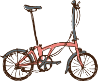
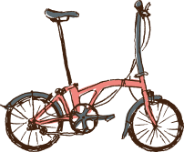

自転車王国・埼玉知られざる魅力
風を切る爽快感と、景色との一体感が味わえる埼玉県は、そんな自転車の魅力を満喫できる“自転車王国”として注目を集めています。知られざる魅力も満載で、車輪が回るたびに、彩り豊かな埼玉の表情が見えてきます。
彩りの輪Saitama Cycle Journey


 

埼玉の自転車文化、サイクリングロード、イベント、
マナー、雑学などを網羅した情報サイト。
「自転車の原点」「利根川・江戸川サイクリングロード」
「ツール・ド・フランス さいたまクリテリウム」など、
「自転車王国・埼玉」の知られざる魅力を再発見！


ほほう、そなたも我が王国「自転車王国・埼玉」に興味を持ったか。よきことじゃ。
この地はな、古より人と風が共に歩んできた、自転車文化の豊穣なる里よ。さいたま市を中心に、道、祭り、心――すべてが自転車とともに息づいておる。
さあ、わしが語るは、知られざる魅力の数々。耳を傾けてくれい。
風を切る爽快感と、景色との一体感が味わえる埼玉県は、そんな自転車の魅力を満喫できる“自転車王国”として注目を集めています。知られざる魅力も満載で、車輪が回るたびに、彩り豊かな埼玉の表情が見えてきます。